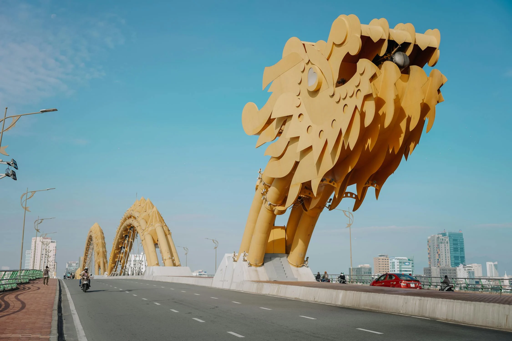
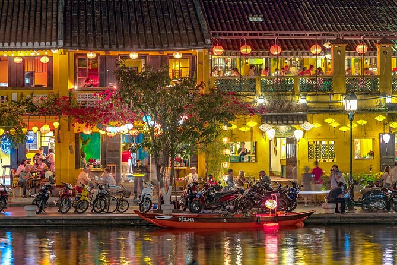
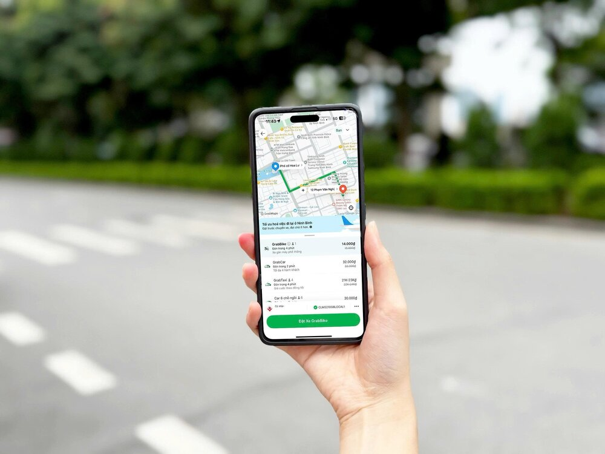
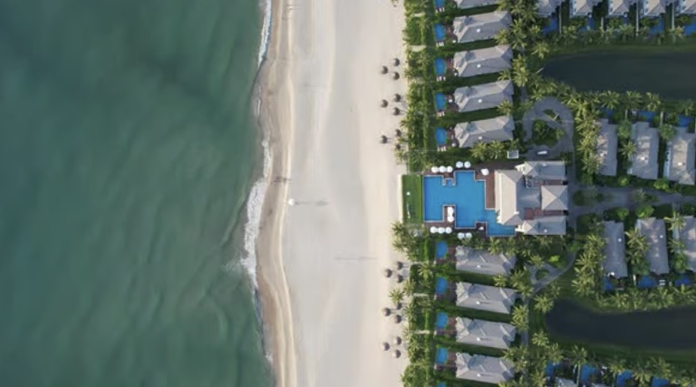
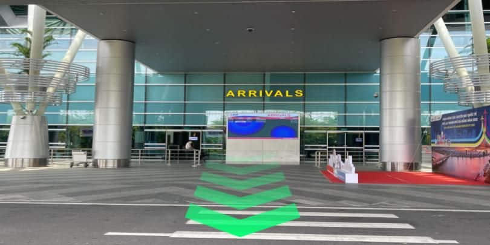
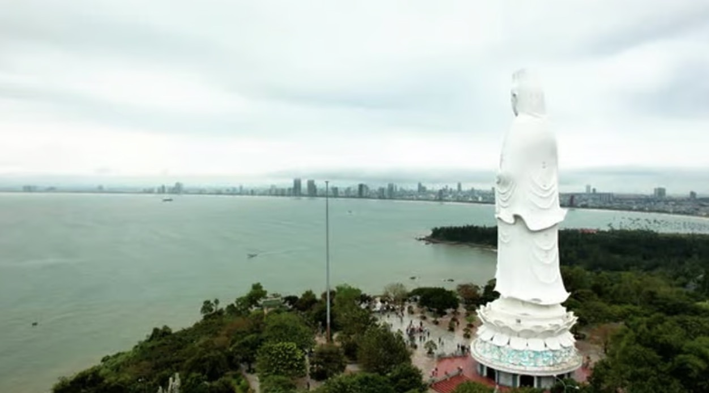

Always Use Grab
Don't hail random cars at the airport or negotiate fares outside hotels. Use Grab and move on with your day. The app gives you a fixed price before you confirm: no conversation required, no risk of being overpriced, driver tracked the whole way.
It works from the airport, between My Khe, An Thuong, the Han River, Son Tra, Marble Mountains and everywhere else. Walk your own neighborhood. For everything else: Grab. It costs almost nothing and removes a layer of friction that catches a lot of first-time visitors off guard.
Keep Ba Na Hills Flexible, and Consider Staying Overnight
Ba Na Hills is one of those places where weather changes everything. The Golden Bridge, the mountain views, the French Village: all of it is significantly better in clear conditions. Fog is common, especially in the afternoon, and a heavy cloud day can turn a spectacular experience into a very expensive cable car ride through grey mist.
If your schedule allows, wait for a clear-sky forecast before committing. The mountain sits at around 1,500 metres and the summit can be socked in while Da Nang city is perfectly sunny below.
And if you want to actually enjoy Ba Na without spending the whole day rushing, there is accommodation on the mountain. Staying overnight means arriving after the day-trip crowds leave, waking up to the fog burning off, and experiencing the village and grounds at a completely different pace. Check current lodging options directly with Sun World Ba Na Hills when planning.
Base Yourself Near My Khe and An Thuong
Don't stay cityside just because the map makes it look central. For most first-time leisure visitors, My Khe and An Thuong are simply better places to wake up. You can walk to the beach, grab coffee at a dozen good cafes, eat well within 200 metres, and be in bed by 11pm without needing to plan anything. The neighborhood has restaurants, bars, massage, convenience stores and beach access all in easy walking distance.
Then use Grab to get everywhere else. The Han River is 10 minutes. Son Tra is 15. Marble Mountains is 15. The city center is quick and cheap. There is no meaningful downside to basing yourself near the beach and using Grab for the rest.
Hai Chau and the city center are not bad. For business travel or short layovers, they make sense. For a first leisure trip, the beach neighborhood wins.
Where to stay in Da Nang →Mistakes We'd Warn Friends About
Going to My Khe Only in the Middle of the Day
Midday in summer is 34-38C with direct sun on white sand. The beach is uncomfortable and the water is lukewarm. Get there before 9am when the fishing boats are returning, the air is cooler, and the beach is mostly empty. Or go after 4:30pm when the light is better and the heat breaks. Sunrise at My Khe is one of the better free experiences in Da Nang and most visitors miss it completely.

Booking the Cheapest Hotel Without Considering Where It Is
A cheap hotel on the wrong side of town can cost you in daily Grab rides what you saved on the room. For most leisure trips, being near My Khe means you can walk to the beach and the An Thuong strip without transport. If you're deep in Hai Chau, you're Grabbing everywhere. Over 4-5 days that adds up and removes the ease that makes Da Nang good.

Skipping Hoi An Because You "Only Have a Few Days"
Hoi An is close enough that almost any length of Da Nang trip can include it. The Ancient Town, the food, the river, the lanterns at dusk: it's a completely different experience from Da Nang and gives the trip a second gear. Grab a private car, arrive late morning, eat lunch, walk the town, stay for early evening. Back to Da Nang by 9pm. Straightforward.
Hoi An guide →
Trying to Walk Everywhere
Da Nang looks walkable on a map. It isn't, not between its main areas. My Khe to the Han River is about 3km in 34C heat. My Khe to Marble Mountains is 8km. The city does not have the pedestrian infrastructure to make these walks comfortable. Walk the An Thuong strip, the beachfront promenade, or the Han River path. Take Grab for everything that crosses a district.

Treating the Weather Like a Fixed Schedule
Ba Na Hills in fog, Son Tra in rain, Hai Van Pass in cloud cover: all disappointing. The weather in Da Nang can shift fast, especially outside the clearest months of March-May. Leave one day in your itinerary with nothing booked. If Ba Na Hills has a perfect clear-sky forecast, that's your day. If the weather turns, use it for cafes, beach, markets or rest. The flexibility is worth more than a fully packed schedule.
Overplanning Every Hour
Da Nang rewards slow travel. One of its genuine pleasures is a full morning with nowhere to be except a coffee shop and the beach. Visitors who pack in six attractions a day in summer heat come back exhausted and regretful. Two big activities per day, with time to drift in between, is the right pace for most people.

Ignoring How Hot It Gets at Midday
In June-September it is regularly 35-38C by midday with high humidity. Marble Mountains, Son Tra, Hai Van Pass: all of these are significantly better in the morning. The schedule that works in Da Nang: early outdoor activity, midday pool or cafe, late afternoon beach or sightseeing, evening at leisure. Visitors who don't adjust their schedule to the heat end up spending miserable hours outside when they could have planned around it.

Taking an Unofficial Taxi From the Airport
Unofficial drivers approach arrivals aggressively at Da Nang airport. The fares are typically 3-5x what Grab charges for the same journey. Mai Linh (green) and Vinasun (white) metered taxis are legitimate if Grab isn't working. Everything else at the arrivals hall is a negotiated fare. Open Grab before you clear customs. The app works in the terminal.
Not Carrying Enough Cash
Hotels and larger restaurants accept cards. Markets, street food, local cafes, small shops, taxis, beach vendors and many massage spots are cash only. Have enough VND in small denominations to cover a day's incidentals. Withdraw from ATMs inside banks or convenience stores (7-Eleven, Circle K) rather than standalone street machines. Exchange at banks or reputable airport counters. Avoid street changers.
Renting a Scooter Without Being Properly Comfortable on One
Da Nang's traffic is manageable but fast-moving. The Hai Van Pass is genuinely enjoyable on a scooter, but not for first-timers on a rented bike in unfamiliar conditions. Traffic accidents are the leading cause of serious injury for foreign visitors in Vietnam. If you're comfortable on a motorbike at home, have a valid international license, and have travel insurance that covers riding: go for it. If not, Grab is cheap enough that renting a scooter for convenience is never worth the risk calculation.
Visiting in October or November Without Understanding What That Means
October and November receive 600-800mm of rain combined. Heavy sustained rain, not afternoon showers. Typhoon risk is real. The beach is largely unusable. Hoi An floods periodically during this window. This is not "a bit rainy." It is Da Nang's genuine off-season. December is considerably better. If Oct-Nov are unavoidable, have travel insurance, keep your itinerary flexible, and have a long list of indoor options.
Best time to visit →
Going to Hoi An Only in the Morning and Leaving Before Evening
Hoi An at noon is hot and crowded. Hoi An at 5pm, when the lanterns come on and the riverside lights up, is completely different. The Ancient Town is at its most atmospheric in early evening. Plan to arrive around 10-11am, eat lunch, explore through the afternoon, and stay to watch the light change at dusk. Heading back to Da Nang by 8-9pm is easy and the trip feels complete.